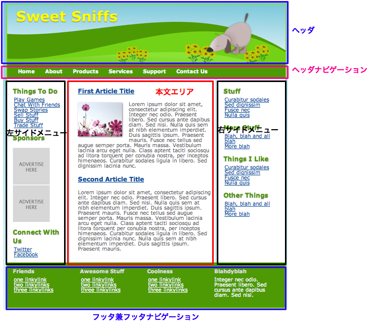
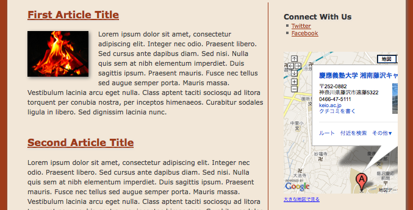
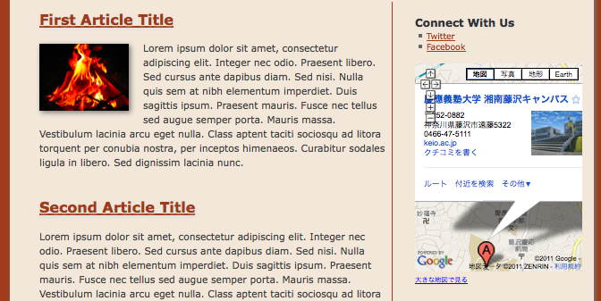
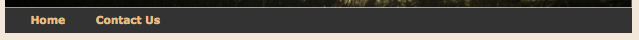

HTMLテンプレートからサイトを構築する
HTMLとCSSを1から作成することはは初心者にとっては敷居が高い． 本説では，インターネット上に多く公開されているHTMLテンプレートを用いて Webサイトを構築する手順を解説する．
HTMLテンプレートとは
HTMLテンプレートとは，いわゆるWebサイトデザインの雛形の事である．通常数ページ分のHTMLと CSSの組み合わせで提供される（物によってはJavascriptも含まれる）． Webサイトは自由なデザイン設計ができるが，基本的に多くのWebサイトは似通った構成をしていることが多い． ある程度最終的なサイトのイメージが固まっているときに，0からCSSを作成しようとすると， HTML/CSSに関する詳細な知識が必要になるとともに，サイトデザインに多くの時間を取られてしまう． そんな時に，HTMLテンプレートを使うと，穴埋め式で良いデザインのWebサイトを作っていくことが出来る．
HTMLテンプレートを使う利点は以下の通りである．
- HTML/CSSについて，完全な理解をしていなくても見た目の良いWebページを作ることが出来る
- 多くのHTMLテンプレートは，マルチブラウザ対応を最初からサポートしているので， テンプレートに従って書けば自動的にマルチブラウザ対応になる
- デザインの手間が省け，デザインセンスが無くてもWebサイトが作成できる
一方，HTMLを使うデメリットも存在する．
- テンプレートによってCSSやHTMLのタグ構造が決められているので， そのルールを把握しながらHTMLを編集する必要がある
- CSSやJavaScriptが巧みに使われていることが多く，テンプレートに定義された 既存のスタイルを安易に変更すると表示が崩れる可能性がある （特にmargin, padding, borderなど， ブロックサイズを変更したときにありがち）
こうしたデメリットもあるが，少なくとも初心者の間はHTMLテンプレートを元に Webページを作成する方が最終的に見た目の良いサイトが作れるので， まずはHTMLテンプレートの使い方に慣れておくと良い． HTMLに慣れてくれば，テンプレートの中から自分の使いたいスタイル部分を抜き出して利用するなどの応用も できるようになる．
HTMLテンプレートを取得する
HTMLテンプレートは「free html templates」などの検索ワードで検索すれば 非常に多くの無料テンプレートを見つけることができる． ただし，テンプレートごとに有償・無償，商業利用の可・不可が変わってくるので， 利用する前には必ずライセンスを確認すること． また，本講義ではHTML5を扱っているので，テンプレートがHTML5で作られているかどうかの確認も必要になる．
以下に，HTML5の無料テンプレートを配布しているサイトを挙げる．
HTMLテンプレートからWebサイトを作成する
ここからは，実際にHTMLテンプレートからWebサイトを作成する手順を解説していく
大まかな手順
- サイトの完成形にできるだけ近いレイアウトのテンプレートを探す
- テンプレートをダウンロードし，まずは正常に表示できるか確かめる
- 必要のないブロックを表示が崩れないように気をつけながら削除する
- 必要なブロックを表示が崩れないように気をつけながら追加していく
- テンプレートの本文を作りたいWebサイトの内容に置き換えていく
サイトの完成形にできるだけ近いレイアウトのテンプレートを探す
まずは，どのテンプレートを使うかを決める必要がある． テンプレート選びの際に気をつけるのは， 必要なブロックが存在し，必要ないブロックが無い必要十分なテンプレートを選択すること である． 多くのテンプレートでは，大体のブロックは共通しているが，ものによってある場合とない場合があるブロックも存在する． 以下に主なホームページの構成要素を示す．
- ヘッダ（ほとんどの場合ある）
- ヘッダナビゲーション（ない場合もある）
- 左サイドメニュー（ない場合もある．二段組みの場合も）
- 右サイドメニュー（ない場合もある．二段組みの場合も）
- 本文エリア（かならずあるが，二段組み，三段組の場合も）
- フッタナビゲーション（ない場合もある）
- フッタ（ほとんどの場合ある）
参考までに，Free HTML5 Templatesサイトの SweetSniffs の場合，下図のような構成になっている．
一方，この授業ページでも使っている ToThePoint では，下図の構成になっている．

二つのテンプレートを見比べてみると，以下の点が異なることが分かる．
- SweetSniffsではサイドメニューが二つあるのに対し，ToThePointは左サイドメニューしかなく，その分本文エリアが広い
- SweetSniffsはフッタにもナビゲーションがあるため，多くのページが存在することを匂わせている
全体として，SweetSniffの方がサイドメニューやフッタナビゲーションが多い分，たくさんのコンテンツを表示するのに 適していることが分かる． 一方，ToThePointはシンプルな分，本文エリアも広く，ページ数が少ない場合に適しているように思われる．
このように，使いたいテンプレートがどのようなブロックで構成されているかを把握しておくと， どのブロックにどの情報を置くのかという目星を付けられる． また，ページ数が少ないサイトにSweetSniffの様な沢山ナビゲーションのあるテンプレートを適用してしまうと， 最終的に中身がスカスカになってしまい見栄えが良くないという問題も起こりうるので，テンプレート選びには注意が必要である．
テンプレートをダウンロードし，まずは正常に表示できるか確かめる
使用するテンプレートを決めたら，まずは何も編集しない状態でうまく表示できるかを試してみる． ここでは CowboyUp というテンプレートを使ってみることにする．
CowboyUpのテンプレートサイト から「Download Here」を選び，ZIPファイルをダウンロードする． 中に入っているファイル構成は下図の様になっている．

次に，このフォルダの中身を全て公開フォルダにコピーする．ここではpublic_html以下にitb_templateというフォルダを作って その中にコピーした．

この状態で，ファイルを置いたURLにアクセスしてみる．この場合は http://web.sfc.keio.ac.jp/~morimori/itb_template/ になる． ここで，正しくテンプレートが表示されているので準備段階はOKである． もしこの時点で正しく表示できない場合は，テンプレートを編集する以前の問題なので，ファイルのアクセス権などを確認すること．
必要のないブロックを表示が崩れないように気をつけながら削除する
次に，作りたいWebサイトに必要のないブロックを削っていく．
このテンプレートの場合，まずは右サイドメニューの「Things To Do」「Our Sponsers」は
とりあえず必要が無かったので，該当部分を削除する．
どこを削除すればよいかはFirebugを使うと分かりやすい．Firebugを起動し，
 アイコンを
クリックした状態で，調べたいブロックをクリックする．
すると，Things To Doはaside id="sidebar"タグの中の中にあることが分かった．
アイコンを
クリックした状態で，調べたいブロックをクリックする．
すると，Things To Doはaside id="sidebar"タグの中の中にあることが分かった．

ここまで分かれば，後はHTMLから該当部分を削除していけば良い．以下のハイライトした部分を削除する．
<aside id="sidebar"><!-- sidebar --> <h3>Things To Do</h3> <ul> <li><a href="#">Play Games</a></li> <li><a href="#">Chat With Friends</a></li> <li><a href="#">Swap Stories</a></li> <li><a href="#">Sell Stuff</a></li> <li><a href="#">Buy Stuff</a></li> <li><a href="#">Trade Stuff</a></li> </ul> <h3>Our Sponsors</h3> <img src="images/ad125.jpg" alt="" /> <img src="images/ad125.jpg" alt="" /><br /> <img src="images/ad125.jpg" alt="" /> <img src="images/ad125.jpg" alt="" /><br /><br /> <h3>Connect With Us</h3> <ul> <li><a href="#">Twitter</a></li> <li><a href="#">Facebook</a></li> </ul> </aside><!-- end of sidebar -->
削除したら，内容を保存し，ブラウザで表示が崩れないかを確認する．

同じ様に，フッタや他の部分からも必要のない部分を削除していけば良い． この時点ではトップページしか無いので，ヘッダナビゲーションの「Home」以外の要素は全て削除した． 具体的には，下図のハイライト部分を削除している．
<nav><!-- top nav --> <div class="menu"> <ul> <li><a href="#">Home</a></li> <li><a href="#">About</a> <ul> <li><a href="#">The Ranch</a></li> <li><a href="#">History</a></li> <li><a href="">Vision</a></li> </ul> </li> <li><a href="#">Products</a> <ul> <li><a href="#">Spurs</a></li> <li><a href="#">Chaps</a></li> </ul> </li> <li><a href="#">Services</a> <ul> <li><a href="#">Rodeos</a></li> <li><a href="#">Wrangling</a></li> </ul> </li> <li><a href="#">Contact Us</a></li> </ul> </div> </nav><!-- end of top nav -->
必要なブロックを表示が崩れないように気をつけながら追加していく
次に，新たにブロックを追加してみる． ここではサイドメニューにGoogle Mapsのウィジェットを追加する例を挙げる． サイドメニューは前節でも確認したとおり，aside id="sidebar"タグの中になるので，その末尾に Google Mapsのタグを追加してみたところ，下図のようになった．
ここで，よく見るとGoogle Mapsウィジェットの右側が切れてしまっていることが分かる． これは，Google Mapsウィジェットの幅が425px（デフォルト）で指定されているのに， サイドメニューの幅が280pxしか無いのが原因である（この幅はFirebugで調べることができる）．
というわけで，Google Mapsウィジェットの「埋め込み地図のカスタマイズ」機能から， 横幅を280pxに指定し直し，修正したものが下図である． 先ほどは右側が切れてしまっていたのが，今度は画面内にナビゲーションボタンが収まっていることが 確認できる．
このように，新しく要素を追加していくときには，一つ一つ正しく表示されるかを確認し， 表示が崩れてしまうときはその時々に応じてサイズを調整したり，スタイルを追加していく必要がある．
テンプレートの本文を作りたいWebサイトの内容に置き換えていく
必要なブロックが揃ったら，中間課題と同じ様に後は内容を本来作りたいWebサイトのものに置き換えていけば良い． この際，元のテンプレートに無かったコンテンツを貼り付けるときには，新たにスタイルを追加する必要が 出てくることがある． その際には他の部分の表示が崩れないかを注意深く確認しながら 一つずつ編集していくと良い．
また，複数ページで構成されるWebサイトの場合は，各ページへのナビゲーションリンクも 正しく設定してやる必要があることに注意する．
二枚目以降のページを作成し，ナビゲーションリンクを貼る
Webサイト複数ページで構成されるのが普通である． ここでは最初に作ったトップページを元に，２枚目以降のページを作成する． なお，二度手間を防ぐために，二枚目以降のページを作る前にサイト共通の部分 （ヘッダ・フッタ・サイドバーなど）は完成させておくことが望ましい．
なにはともあれコピー
ここでは，トップページ「Home（index.html）」を元に，連絡先ページ「Contact Us（contact_us.html）」 を作成することにする． index.htmlをそのままcontact_us.htmlにコピーする．

次に，index.html, contact_us.html両方のナビゲーション部分にお互いへのリンクを貼る． このHTMLテンプレートにおいては，ヘッダナビゲーションはnavタグで囲まれた部分にある． そのナビゲーション部分を下記のように書き換える． 必ずindex.html, contact_us.html両方のナビゲーションを修正すること．
<nav><!-- top nav --> <div class="menu"> <ul> <li><a href="index.html">Home</a></li> <li><a href="contact_us.html">Contact Us</a></li> </ul> </div> </nav><!-- end of top nav -->
書き換えた結果，ヘッダナビゲーション部分は下図の様になる．
これで，それぞれのリンクをクリックすることでお互いのページに飛ぶことが出来るようになった． ここまで確認できたらcontact_us.htmlを本来の内容に修正していけば良い． さらにページを増やす場合， 既に作成した全てのページのナビゲーション部分を修正する必要がある 事を忘れないこと． これを忘れてしまうと，ページによってナビゲーションの内容が変わってしまう．
まとめ
本ページでは，既存のHTMLテンプレートから作りたいWebページを作成していく手順について解説した． より手軽に見栄えの良いWebサイトを作る方法として知っておくと良いだろう．